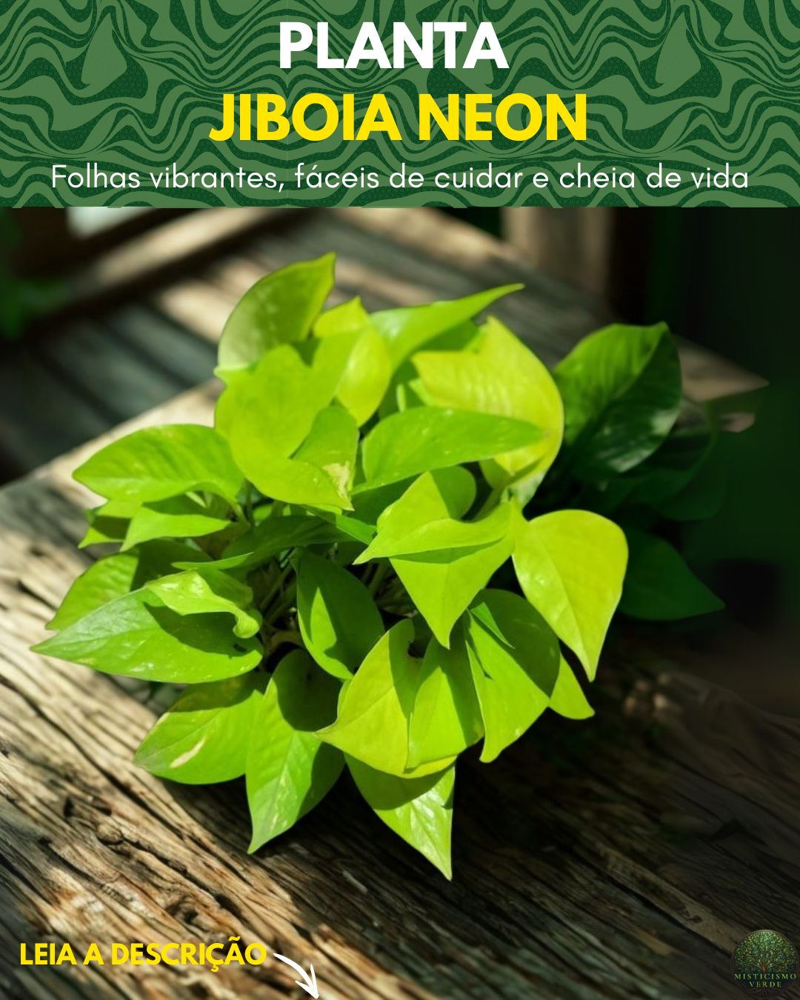

Uma das plantas mais eficientes para limpar o ar
A Jiboia Neon é reconhecida cientificamente como uma das plantas mais eficientes para purificar o ar. Em um famoso estudo da NASA, a Epipremnum aureum (nome científico da Jiboia) foi listada entre as espécies com maior capacidade de remover toxinas como formaldeído, benzeno e monóxido de carbono do ambiente.
Isso significa que, além de embelezar, ela trabalha silenciosamente para melhorar a qualidade do ar que você respira — especialmente em ambientes fechados, com pouca ventilação ou com grande circulação de pessoas.
“A Jiboia Neon não apenas enfeita. Ela respira por você, purifica o que você inspira e devolve ao ambiente a leveza que o dia a dia vai roubando.”
Renovação e movimento onde há estagnação
No campo energético, a Jiboia é conhecida como uma planta de absorção e transmutação. Ela não apenas neutraliza energias pesadas — ela as processa, da mesma forma que faz com as toxinas do ar. Por isso, é especialmente indicada para ambientes com muita circulação de pessoas, conflitos emocionais ou sensação de estagnação.
Se você sente que um cômodo da sua casa está "parado" ou pesado, a Jiboia Neon pode ser a aliada que faltava. Ela traz movimento, renovação e estimula a criatividade e o fluxo de novas ideias.

Como cultivar sua Jiboia Neon em Belém e no Pará
Uma das vantagens da Jiboia Neon é sua adaptabilidade. No clima quente e úmido da Amazônia, ela se sente em casa. Mas alguns cuidados são essenciais para que ela mantenha sua cor vibrante e sua saúde.
Rega: no clima paraense, o maior erro é regar demais. A alta umidade do ar já fornece boa parte da hidratação que a planta precisa. Regue apenas quando o topo do solo estiver seco — a cada 4 a 6 dias no verão, e a cada 7 a 10 dias no inverno amazônico (dezembro a março).
Luz: a variedade Neon precisa de mais luz do que a Jiboia comum para manter sua cor viva. Prefira luz indireta intensa ou meia-sombra. Evite sol direto do meio-dia, que pode queimar as folhas.
Atenção: se as folhas começarem a ficar verdes-escuras, é sinal de falta de luz. Mova-a para um local mais iluminado e as novas folhas voltarão a nascer com a cor vibrante.
Posicionamento e usos práticos no dia a dia
A Jiboia Neon é extremamente versátil. Pode ser cultivada em vasos suspensos, em prateleiras, em suportes de parede ou mesmo em vasos de mesa. Aqui estão algumas sugestões:
Ambiente de trabalho: perfeita para escritórios e home office. Ajuda a manter o foco, reduz o estresse e purifica o ar de equipamentos eletrônicos.
Salas e quartos: em prateleiras altas ou vasos pendurados, seus ramos criam uma cascata verde que traz aconchego e vitalidade.
Cantinho de estudos: estimula a mente criativa e ajuda na retenção de informações.
Banheiro: tolera bem a umidade e pouca luz, sendo uma das poucas plantas que prosperam em banheiros com janela pequena.
Como ativar a energia da sua Jiboia Neon
Ao receber sua planta, você pode fazer um pequeno ritual para ativar sua energia de renovação:
1. Preparação: acenda uma vela verde (cor da renovação) ou branca. Coloque a planta sobre um pano limpo. Respire fundo três vezes.
2. Intenção: passe as mãos suavemente sobre as folhas. Mentalize o que você quer renovar no ambiente: leveza, criatividade, harmonia. Diga em voz alta: "Esta planta transforma o ar pesado em leveza. Onde ela está, a energia flui, se renova, se expande."
3. Posicionamento: coloque a planta no local escolhido. A cada folha nova que brotar, reconheça como sinal de que o movimento pedido está acontecendo.
Jiboia Neon — Planta de Purificação e Renovação
Cultivada com consciência em Belém do Pará, nossa Jiboia Neon é propagada por estaquia em água ou solo, sem danificar a planta-matriz. Cada muda carrega uma intenção de renovação e purificação antes de sair do nosso viveiro.
Conhecer a Jiboia Neon →